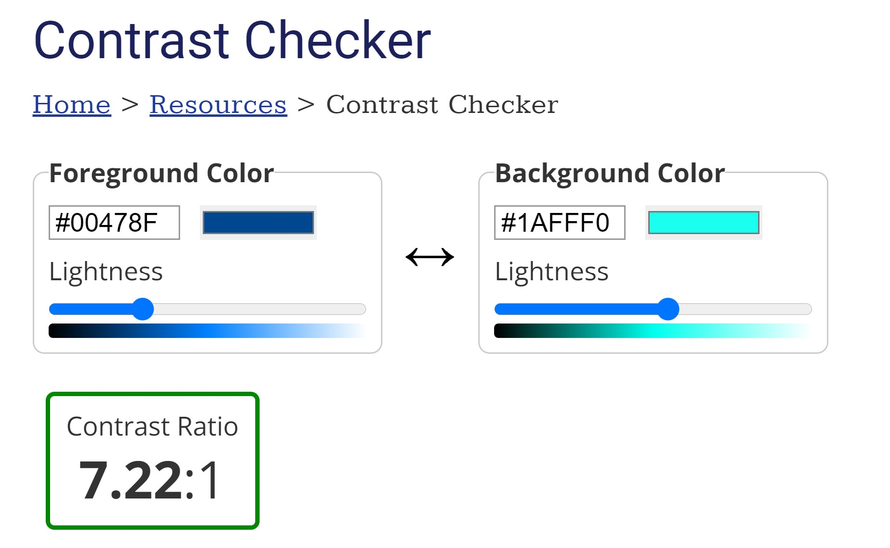

Accessibility
Right from the start of the design and development process for this website, we thought carefully about how our design choices will affect users with visual impairments or limited motor function. We made decisions about the layout, colour scheme, text design and navigation of the website, and then tested the website using an automated accessibility checker to ensure that are design goals were met.
Colours
Our colour scheme features black and dark blue text on a light background for the main text and headings, with the colours reversed for internal links. Visual interest is added with a gradient colour background, which doesn’t interfere with the legibility of the text. All colour combinations were tested using WebAIM Contrast Checker to ensure that we met the WCAG Level AAA minimum recommended contrast ratio of 7:1.
Fonts
We use a single font throughout the website, for both headings and body text. Quicksand is a clean, easy-to-read sans serif text with good spacing between letters; we increased the line height to 1.5 to make the text even easier to read. All font sizes are specified in rem to make the text responsive to different screen sizing; body text is set to 1.8rem – which equals 18pt based on the html font size setting.
Links
We have used different styling on internal and external links to distinguish them from each other and have been careful not to rely on colour alone to indicate purpose. Internal links are styled to look like buttons; in their hover or focus states the colour scheme is reversed, and a double chevron appears as an additional visual cue to the purpose of the link.
External links are dark blue (compared to black body text) and in their hover or focus states they become underlined with a contrasting colour background.
Alt text
All images carry a descriptive alt text for the partially sighted.
Layout
The homepage has a simple layout with four links to take users to the other pages on the website. It’s possible to navigate the pages using just the tab and arrow keys; there are no 'traps' in which a user navigating with a keyboard can get stuck.
Testing
Once the website was finished and published on GitHub Pages, we ran the HTML and CSS code for the entire site through the WAVE Web Accessibility Evaluation Tool.
Back to home